UI 参考图集
2026-11-05 从各项目官网、在线演示和 README 实际截取。点图放大。看完告诉我你想往哪个方向走，或者哪几张的哪部分想要。
你点名的参考
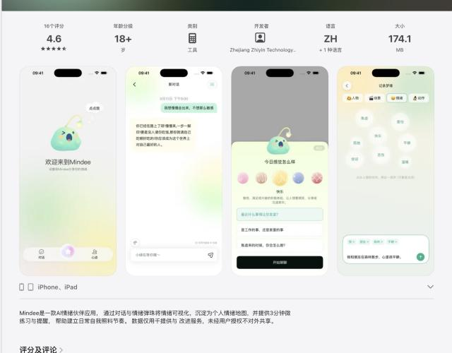
Mindee AI 情绪伙伴 · iOSApp Store 4.6
看点：一只会发光的小鮟鱇鱼做吉祥物；薄荷绿到奶黄的大面积柔和渐变；“今日感觉怎么样”用一排彩色小圆球选情绪；“情绪弹珠”把记录过的情绪变成漂浮的气泡，沉淀成情绪地图。
和答案之书最贴近：几乎就是同一个场景。吉祥物 + 渐变 + 情绪气泡这套语言可以直接借鉴，不照搬形象。
App Store ↗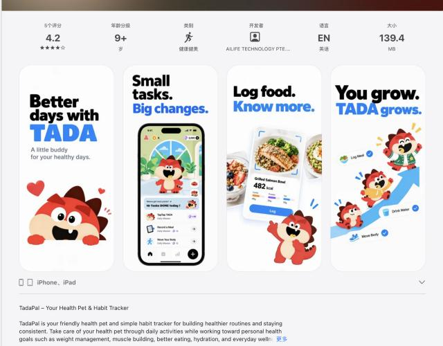
TadaPal（Tada） 健康宠物 + 习惯 · iOS
看点：红色小怪兽宠物陪你完成每天的小任务，宠物随你的坚持“长大”；粗体大字 + 高饱和蓝红，活泼。
可借的：“你做一件小事，伙伴就成长一点”的养成反馈，正好对应答案之书的七天实验和打卡。顾虑：配色太亮太跳，不适合低落时打开。
App Store ↗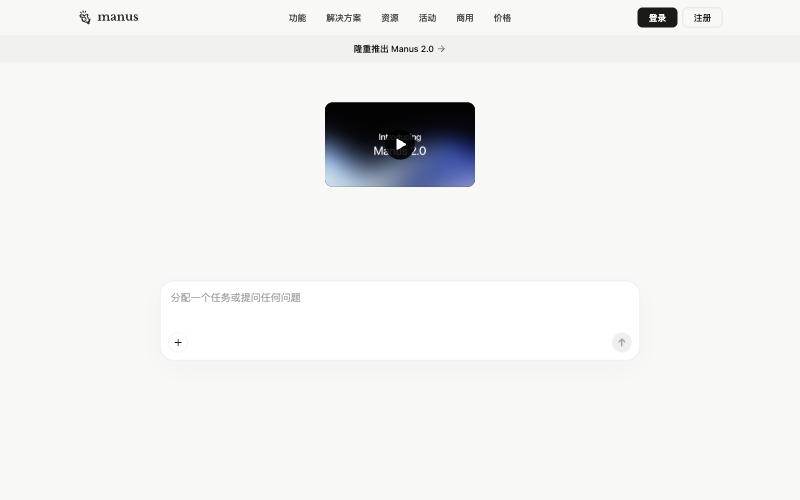
Manus 通用 Agent
看点：米白底、几乎只有一个居中的大输入框、黑色实心按钮、衬线 Logo；极简到只剩“说吧”。
可借的：首页就是一个安静的大输入框，没有说明书式的功能墙；任务进行中的进度展示方式。
官网 ↗Memos 在下面 B 组。Cue 和 Muse 我没能确定是哪一款：App Store 上叫 Cue 的是戒瘾治疗用的 CueSelf，叫 Muse 的有好几个日记应用。发我链接或开发者名，我补进来。
A · 角色陪伴型：有一个“形象”陪着你
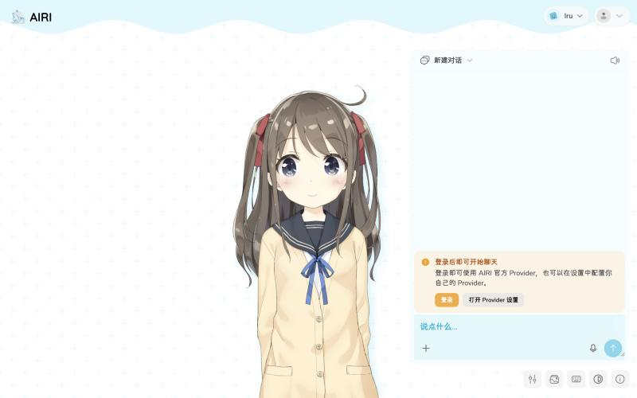
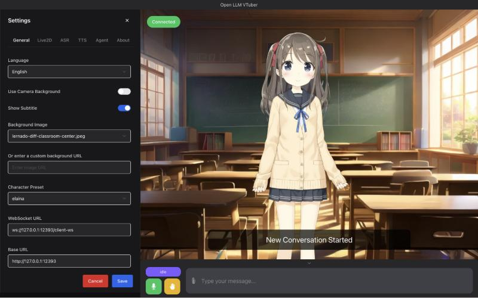
Open-LLM-VTuber Live2D · 语音
看点：全屏场景背景 + Live2D 角色 + 底部字幕和输入条，语音优先，还有桌宠模式。
适合答案之书的部分：沉浸感、字幕式回复、语音陪伴。顾虑：设置面板很工程化；场景插画需要版权素材。
GitHub ↗B · 日记时间线型：安静、像在写字
C · 极简 AI 工作台型：助手列表 + 对话
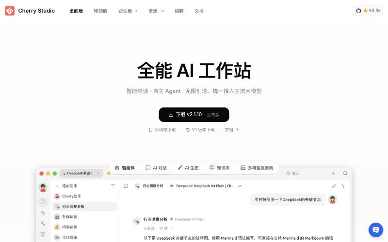
Cherry Studio CherryHQ/cherry-studio约 53k ★
看点：macOS 原生感：左侧“助手”列表（每个有头像），中间对话，顶部标签页；黑白灰为主，非常干净。
适合答案之书的部分：把每个技能做成一个“助手”头像，列表即入口。顾虑：生产力工具气质，情感温度低。
GitHub ↗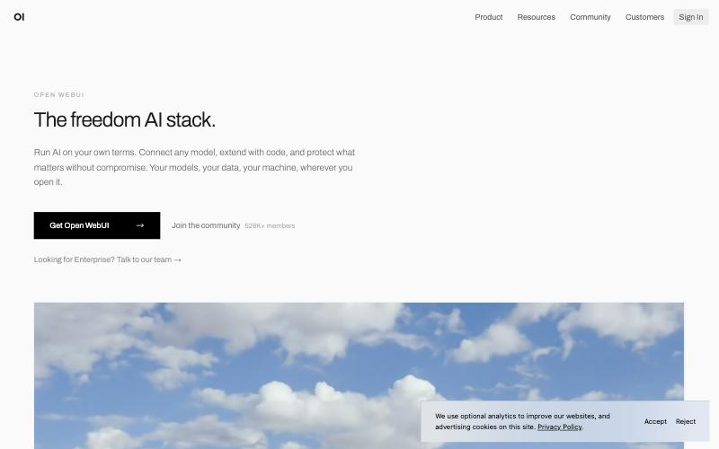
Open WebUI open-webui/open-webui
看点：极度克制的单色排版、大留白、天空实景图做氛围。
适合答案之书的部分：用一张自然图片（天空、海、窗外）定情绪基调，文字少而稳。顾虑：产品内页偏 ChatGPT 式通用界面。
GitHub ↗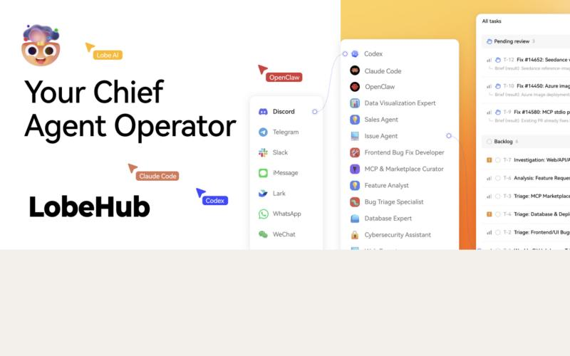
LobeHub（原 LobeChat） lobehub/lobehub
看点：表情化的角色头像、渐变暖色块、助手市场卡片；IM 网关图示（Telegram、飞书、微信……）。
适合答案之书的部分：技能市场卡片、给每个技能一个有表情的头像。顾虑：信息量大、偏“团队 Agent 平台”。
GitHub ↗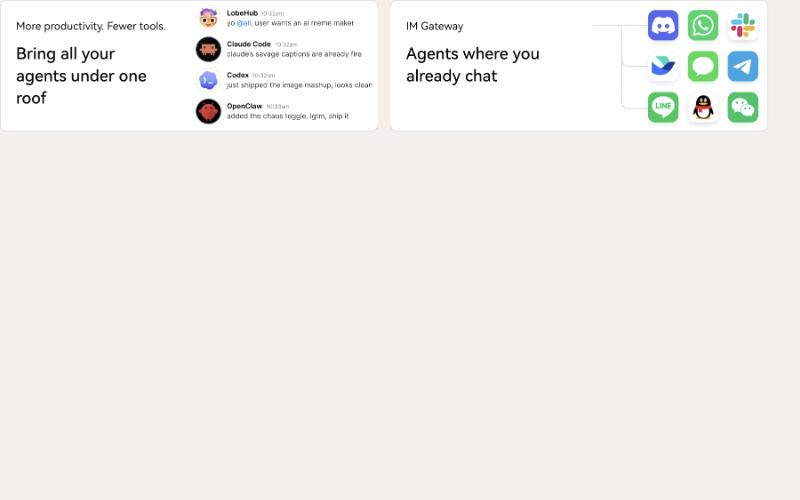
LobeHub · IM 网关 README 截图
“在你已经在用的聊天软件里找到它”这一块的表达方式，可以借给答案之书的“手机渠道”设置页。
D · 个人 Agent 网关型
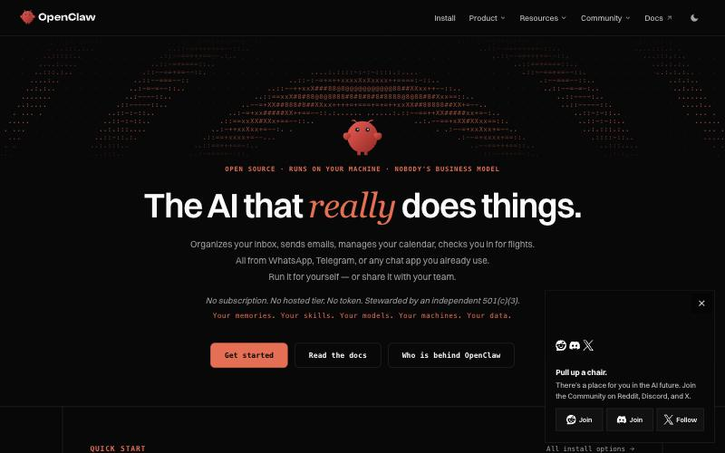
OpenClaw openclaw/openclaw
看点：深色、ASCII 字符画、珊瑚橙强调色、等宽字体，极客气质。
适合答案之书的部分：skill / 渠道 / 记忆这套架构（已经借了）。顾虑：视觉太冷太硬，不适合情绪陪伴。
GitHub ↗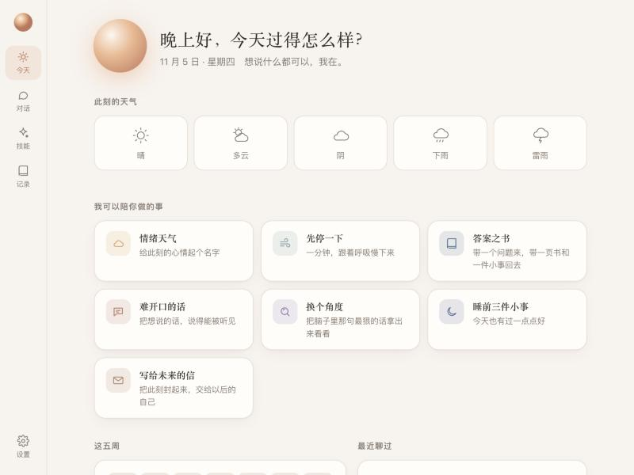
答案之书 · 旧版 对照
暖白底、陶土色强调、光球头像、情绪天气 + 技能卡片。你觉得丑的话，可以直接说哪里不对：配色、字体、布局、还是“不够像一个人”。
可以选的方向
参考 AIRI：左边一个会呼吸的形象（可以不是二次元，比如插画风的小动物或抽象光团），右边对话。最有陪伴感。
参考 Memos：日历 + 时间线，聊天、日记、信、答案页都是一条流里的卡片。最安静、最私人。
参考 Cherry Studio：每个技能是一个有头像的“助手”，左列表右对话。最好上手。
一个有性格的小吉祥物（会随心情变颜色/表情）+ 大面积柔和渐变 + 情绪气泡地图；首页像 Manus 一样只留一个安静的输入框；记录页用 Memos 的日历时间线。
比如“B 的首页 + A 的对话页”，或者“C 的结构 + Open WebUI 的自然图片氛围”。